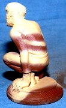
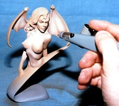

First you are going to need some equipment to get started. You will need your choice of airbrushes fuse whatever type or brand that you are comfortable with). An air source is also needed, whether it is canned air an air tank, or a compressor. Your choice of paints and thinners. (For this article I will be using Liquitex acrylic paints.) Plus something to mix your colors in, and to mix them with. At this point you should be set to go.
I am going to demonstrate creating a stone affect on Industrial Resin Craft's Wolfman gargoyle figure. Creating a stone affect is rather easy and I find it a lot of fun. Because there is no right or wrong way it should look, so you can let your imagination run wild.
I am going to attempt to create a layered sandstone effect
on this kit. I started with the primed figure and base coated the
entire kit with a burnt sienna (red brown) color. I had to put on
several light coats to achieve a good even base color. After the
base color has had time to dry I mixed a light sandstone color
with raw sienna (yellow brown), white, and a little burnt umber
Chocolate brown). Once the color was mixed to the shade I
liked, l thinned it with water and airbrush thinner to achieve a
milky consistency. NOTE: Make sure that the color is mixed and
thinned evenly, because if you have any small clumps of paint it
could clog the airbrush and cause inconsistent spraying.

 With this color I started painting a ringed layer pattern on the
Wolfman. It did not make a difference what the pattern was,
because no two stones look the same. This color, being light, will
have to go on in several coats. Next I mixed this master color
with a little more burnt umber to create a darker color. With
this color I started by darkening the edges where the colors
meet. I also started adding darker areas to the ringed layered
pattern.
My next step was to mix a straight burnt umber, and
using my fine line tip on my airbrush I started adding irregular
line patterns to the figure. This gives the appearance of veins
running through the stone. Once I achieved a pattern that I was
satisfied with I allowed it to dry thoroughly and gave it a couple
coats of matte sealant.
With this color I started painting a ringed layer pattern on the
Wolfman. It did not make a difference what the pattern was,
because no two stones look the same. This color, being light, will
have to go on in several coats. Next I mixed this master color
with a little more burnt umber to create a darker color. With
this color I started by darkening the edges where the colors
meet. I also started adding darker areas to the ringed layered
pattern.
My next step was to mix a straight burnt umber, and
using my fine line tip on my airbrush I started adding irregular
line patterns to the figure. This gives the appearance of veins
running through the stone. Once I achieved a pattern that I was
satisfied with I allowed it to dry thoroughly and gave it a couple
coats of matte sealant.
To bring out the texture in the stone I applied a glaze to the figure. A glaze was not applied with the airbrush. This can be done with a paint brush or soft cloth. To mix the glaze, I used liquitex gel medium and mixed burnt umber with a little black to it. (I want a very dark brown glaze.) Next I thinned it down with a little water and airbrush thinnec (not too much because I still wanted it a little thick). I Applied the glaze with a brush working small areas. I then wiped the excess off with a clean dry cloth. This brought out the recessed areas of the figure. To finish I allowed it to dry and then sealed it with a couple coats of matte finish. It is now ready for display.
Creating Realistic Flesh Tones
 Next I am going to tell you how to create a realistic flesh tone. For this demonstration I used John Dennett's Miss Tokyo '94 bust. First I primed the bust. Next I mixed my master flesh color. To do this I mixed equal amounts of burnt sienna (red brown), raw sienna (yellow brown), and white until I got a shade that I was happy with. I then thinned it down with water and airbrush thinner, as I did with the first kit. (To the consistency of milk.) Next I sprayed the master color on all of the flesh areas of the figure. This color went on in multiple layers to achieve proper coverage. Next I took part of the master color (setting the rest aside for later) and added a little white to it so that I could add highlights. To do so I sprayed along the top of the cheeks, the chin, shoulders, collar bone, the breasts, and along the ribs and abdomen. This gave very nice highlights. But I was not done yet. Next I used the color I had for highlights and added a little red to it, making a rosy flesh tone. With this color I sprayed a little on the cheeks, shoulders, and under the breasts. To finish the flesh tone, I wanted to bring all the colors together and tone down the separations a little. So I used my master flesh tone and covered the entire figure (from a distance of about 10 to 12 inches) with a light mist. Now the skin was finished. Detailing came later after the kit was dried and sealed.

I hope you have fun with this, I sure did. For more information
and techniques on airbrushing, check into David Fisher's
Model Mania video series. Again do not be intimidated by an
airbrush, they are not difficult to use. Send any questions,
comments and suggestions to:
NOTE: Due to a recent move the phone number Misted on cards and previous issues is no longer in use. Please send all correspondence to my P.O. Box. Thank you.
Questions and Answers:
Q) From Jim Phillips of Indiana: "How do I pin a kit together and
make sure the pieces line up correctly after I have drilled them?"
A) Jim, thanks for the question. I have found that the best way
to ensure you achieve proper alignment. is to glue the pieces
together first. Then drill the hole for the pin through one piece
and into the adjoining piece. Set your pin and fill the hole with a
little putty (No one will ever know). Rich.
Originally published, as black and white, in
KitBuilders Magazine.
Reprinted here, in color, with permission. Thanks, KitBuilders!
The Gremlins in the Garage webzine is a production of Firefly Design. If you have any questions or comments please get in touch.
Copyright © 1994-1997 Firefly Design.